<title>Teaching Three LED Panels to Move</title>
<link rel="preconnect" href="https://fonts.googleapis.com">
<link rel="stylesheet" href="https://fonts.googleapis.com/css2?family=Bricolage+Grotesque:opsz,wght@12..96,500;12..96,700&family=IBM+Plex+Sans:wght@400;500&family=IBM+Plex+Mono:wght@400;500&display=swap">
<style>
/* Layout: single reading column, wide figures that break out of it. Dark-first, like the LEDs. */
:root{
  --bg:#0d1014; --fg:#d9dee5; --muted:#8b95a3; --rule:#232a33; --code-bg:#151a21; --accent:#4fd6c4; --fig-bg:#05070a;
  --display:"Bricolage Grotesque","Helvetica Neue",Arial,sans-serif;
  --body:"IBM Plex Sans",system-ui,-apple-system,"Segoe UI",sans-serif;
  --mono:"IBM Plex Mono",ui-monospace,Consolas,monospace;
  color-scheme:dark;
}
@media (prefers-color-scheme:light){:root:not([data-theme="dark"]){
  --bg:#f5f6f8; --fg:#1b2027; --muted:#5a6573; --rule:#d9dee4; --code-bg:#e9edf1; --accent:#0a7d70; --fig-bg:#05070a; color-scheme:light}}
:root[data-theme="light"]{--bg:#f5f6f8; --fg:#1b2027; --muted:#5a6573; --rule:#d9dee4; --code-bg:#e9edf1; --accent:#0a7d70; --fig-bg:#05070a; color-scheme:light}
body{background:var(--bg);color:var(--fg);font:17px/1.65 var(--body);padding-inline:16px;padding-block:48px 80px}
main{max-width:720px;margin:0 auto}
header{padding-bottom:28px;border-bottom:1px solid var(--rule);margin-bottom:36px}
.kicker{font:500 12px/1 var(--mono);letter-spacing:.12em;text-transform:uppercase;color:var(--accent);margin:0 0 18px}
h1{font:700 clamp(2rem,6vw,3.2rem)/1.05 var(--display);letter-spacing:-.02em;margin:0 0 16px;text-wrap:balance}
.lede{font-size:1.15rem;color:var(--muted);margin:0 0 14px;max-width:60ch}
.meta{font:12px/1.4 var(--mono);color:var(--muted);margin:0}
h2{font:700 1.55rem/1.2 var(--display);letter-spacing:-.01em;margin:52px 0 12px;text-wrap:balance}
p{margin:0 0 1.1em;max-width:68ch}
a{color:var(--accent)}
code{font:.88em var(--mono);background:var(--code-bg);padding:.1em .35em;border-radius:3px}
pre{font:13.5px/1.55 var(--mono);background:var(--code-bg);border-radius:4px;padding:14px 16px;overflow-x:auto;margin:0 0 1.4em;border-left:2px solid var(--accent)}
pre code{background:none;padding:0;font-size:inherit}
figure{margin:28px 0 32px}
figure img{display:block;width:100%;height:auto;background:var(--fig-bg);border-radius:3px}
figcaption{font-size:13.5px;line-height:1.5;color:var(--muted);margin-top:8px;max-width:68ch}
figcaption b{color:var(--fg);font-weight:500}
.pair{display:grid;grid-template-columns:1fr 1fr;gap:12px}
.pair figure{margin:0;min-width:0}
@media (max-width:560px){.pair{grid-template-columns:1fr}.pair figure{margin-bottom:20px}}
.tablewrap{overflow-x:auto;margin:0 0 1.4em}
table{border-collapse:collapse;font:13.5px/1.4 var(--mono);min-width:100%}
th,td{border-bottom:1px solid var(--rule);padding:7px 12px;text-align:left;white-space:nowrap}
th{color:var(--muted);font-weight:500}
td:first-child,th:first-child{padding-left:0}
.note{border-top:1px solid var(--rule);margin-top:56px;padding-top:18px;font-size:14px;color:var(--muted)}
:focus-visible{outline:2px solid var(--accent);outline-offset:2px}
</style>

<main>
<header>
  <p class="kicker">Build log · IS31FL3736 · Teensy 3.2</p>
  <h1>Teaching three LED panels to move</h1>
  <p class="lede">Ten days with a serial REPL, 288 RGB channels and a webcam, working out what the IS31FL3736 can animate on its own, what it can't, and what the Teensy has to do instead.</p>
  <p class="meta">25 Sep – 5 Oct 2026 · 18 commits · firmware in <span style="white-space:nowrap">src/main.cpp</span>, tools in scripts/</p>
</header>

<p>The goal of this project is a small DMX-controlled LED display. Before a DMX controller gets involved, the panels need a vocabulary: a handful of commands that make something worth looking at, without a host streaming every pixel. So the first thing built was a REPL. You type a line over serial, the Teensy writes registers on the IS31FL3736 LED drivers, and the panels respond.</p>

<h2>The rig</h2>
<p>Each panel is an 8 × 4 grid of RGB LEDs on one IS31FL3736, which scans 12 switch rows against 8 current-sink columns. Three of them are stacked in Y for the proof of concept (8 × 12 LEDs; the final display will use two). They share one I²C bus on a ribbon cable, and each board gets its address from solder jumpers: 0x50 for the master, 0x51 and 0x52 for the others. The master drives the SYNC line so that the chips' hardware breathing timers run in step.</p>

<figure>
  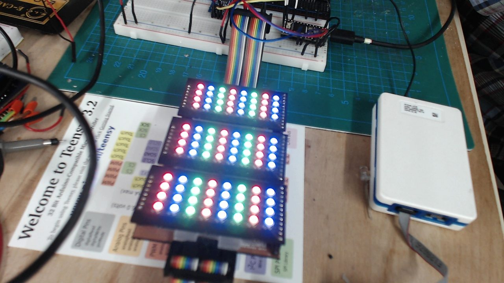
  <figcaption><b>The first full check.</b> All three panels lit with alternating red, blue and green columns. The Teensy 3.2 and the ribbon cables are visible at the top.</figcaption>
</figure>

<h2>A REPL for a chip with 288 channels</h2>
<p>The command set grew in the first two days. <code>panel 3</code> resets the chips and sets up SYNC. <code>load pwm</code> takes one hex triplet per LED, <code>fill</code> repeats a pattern over a range, <code>gcc</code> sets the global current, and <code>dump</code> prints the shadow state. A test from the first session looked like this:</p>
<pre><code>panel 3
gcc 100
mode pwm
fill pwm from 0 to 7 with 400000
fill pwm from 88 to 95 with 000040
load pwm 004000</code></pre>
<p>The numbering took a few attempts. The chip's registers don't match how anyone looks at the display, so the firmware now maps every LED to display coordinates: LED 0 is the bottom-left of the whole stack, X runs left to right, then rows run upward through all panels. The master panel's position was first assumed to be the top of the stack. After the stack was reassembled, a marker test seen through the webcam confirmed the master is the bottom panel, and the one constant that holds this assumption (<code>MASTER_AT_TOP</code>) was flipped to <code>false</code>.</p>

<h2>Using a webcam as a test harness</h2>
<p>Most of the pictures on this page come from the same trick: <code>capture.py</code> grabs frames from a USB webcam and <code>montage.py</code> tiles them into contact sheets. That made it possible to check an animation without standing over the panels. It also surfaced practical details that went into the README: camera indices change across reboots (so the script can now select a camera by name), very short exposures catch the multiplexing scan as partial rows, and an exposure of about −7 shows static LEDs well while −9 to −11 suits the animated modes.</p>

<h2>Letting the chip do it: Auto Breath Mode</h2>
<p>The IS31FL3736 has Auto Breath Mode (ABM): three timers that fade an LED up and down with no host involvement. That is attractive for a DMX display, because the controller would only need to set a few values. The first animation was a rainbow built on it. All three timers run the same triangle wave but start at staggered phases, and each LED's red, green and blue channels are assigned to a rotation of those timers, so the colours crossfade as the wave moves.</p>
<p>Two limits showed up quickly, both visible in the captures:</p>
<ul>
<li><b>Three timers means three phases.</b> The pattern repeats every three LEDs, so the wave moves in steps rather than smoothly.</li>
<li><b>A breathing dot always goes to full intensity.</b> An ABM dot ignores its PWM value for its peak, and a dot at PWM 0 still lights. The README records this as a measurement, and the commit that added single-colour waves explains how it was worked around: channels that should stay off stay on plain PWM.</li>
</ul>

<div class="pair">
  <figure>
    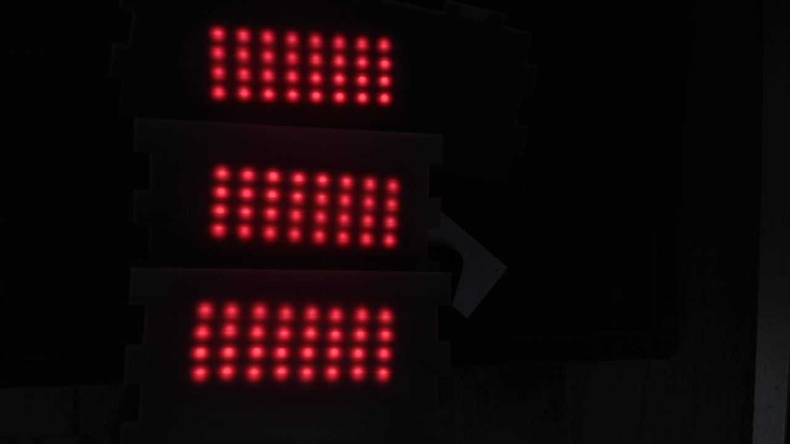
    <figcaption><b>Without an ABM assignment.</b></figcaption>
  </figure>
  <figure>
    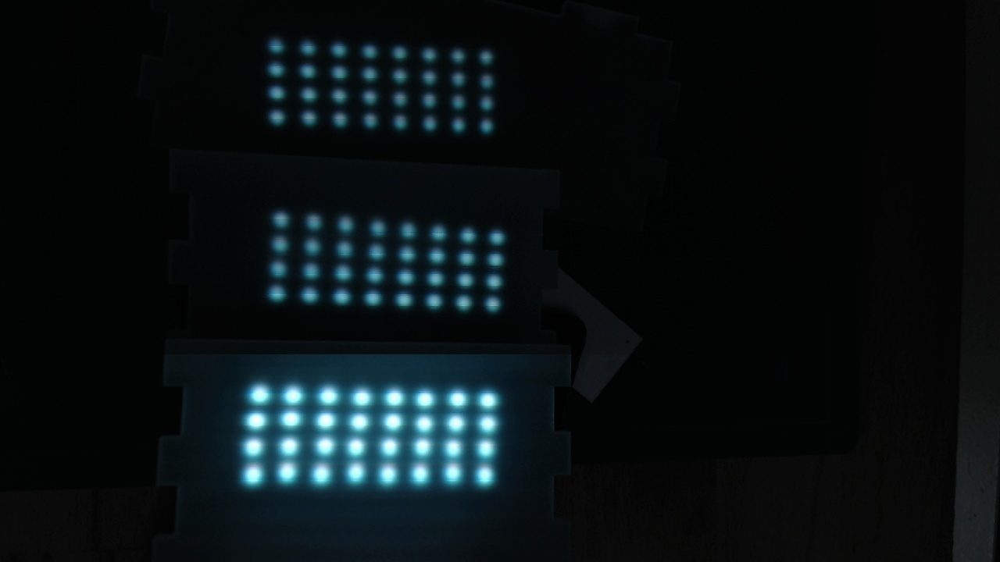
    <figcaption><b>With one assigned.</b> The breathing dot reaches full intensity regardless of its PWM value.</figcaption>
  </figure>
</div>

<p>Several timing shapes were tried to see whether the steps could be hidden: a pulse (the original rainbow timing), a notch and two sawtooth variants. The heat strip below plots brightness against time for each shape. None of them made the wave truly smooth, and the option was kept as <code>--shape</code>.</p>

<figure>
  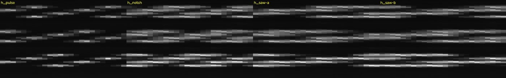
  <figcaption><b>Four breath profiles.</b> Each strip is built from a series of webcam frames and shows how brightness varies over time on the three panels.</figcaption>
</figure>

<p>ABM did get one useful extension. A colour pattern such as <code>--colors red,blue</code> is tiled over the LEDs and each LED fades between its colour and black. That limits the palette to the seven on/off combinations (red, green, blue, yellow, cyan, magenta, white), because an ABM channel can't be set to an in-between level.</p>

<figure>
  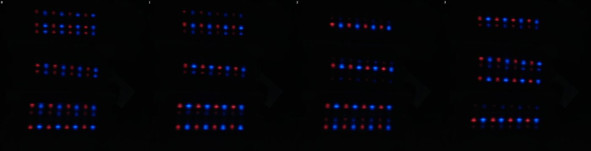
  <figcaption><b>An ABM colour wave.</b> Alternating red and blue columns, rising. Four frames from a capture.</figcaption>
</figure>
<figure>
  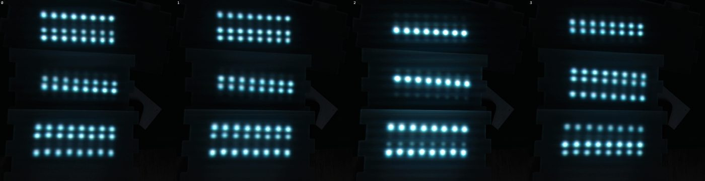
  <figcaption><b>A single-colour ABM wave in cyan.</b> Note the stepped look: only three phases exist, so rows brighten in groups.</figcaption>
</figure>

<h2>When the chip can't, the Teensy does</h2>
<p>A smooth bump of light that fades up, holds and fades down needs many brightness levels across the display at once, and that is what the ABM timers can't give. The answer was to render the wave on the Teensy. A <code>wave</code> command starts a task in <code>loop()</code> that computes a frame (30 fps by default), applies a gamma table (exponent 2.2), and writes only the PWM rows that changed. A full redraw of three panels took about 7 ms, and 19 ms in the worst case measured, so there is plenty of headroom.</p>
<p>This is still compatible with the DMX goal. The controller doesn't send 288 channels; it sends a few parameters (colours, width, speed, direction) and the firmware does the rest. The wave's shape has three controls: <code>width</code> for the whole rise-and-fall, <code>plateau</code> for LEDs held at full colour inside it, and <code>gap</code> for dark LEDs between bumps. Never raising an error is a deliberate rule here: a DMX device has nobody to report errors to, so bad values fall back to defaults or are clamped.</p>
<pre><code>wave ff8000 width 10 speed 3 dir up
python3 scripts/wave.py --send --pwm --colors red --direction up --width 10</code></pre>

<figure>
  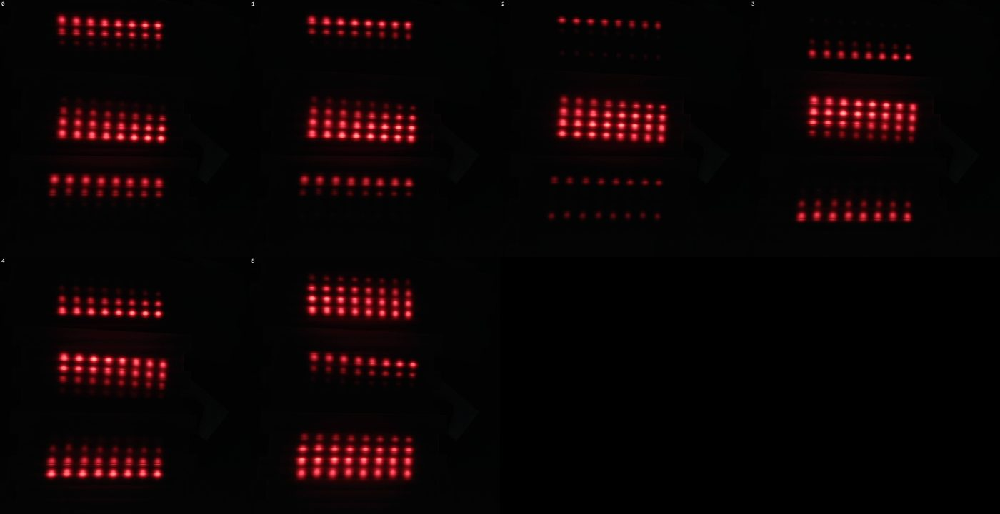
  <figcaption><b>The PWM wave, red.</b> Compared with the ABM version, brightness now falls off gradually across several LEDs in each direction.</figcaption>
</figure>

<h2>A rainbow that doesn't get stuck on red</h2>
<p>Once the firmware could render any colour, the rainbow moved there too. <code>wave rainbow</code> is a continuous scrolling rainbow: the hue depends on position along the chosen direction and scrolls with time, going round the colour wheel over <code>--width</code> LEDs. <code>wave rainbow-bump</code> keeps the fading bump shape and paints the spectrum, red to violet, across each one.</p>
<p>Getting the colours to look right took some tuning, and the reasons are in the commit history:</p>
<ul>
<li>Hue ramps are mixed directly in PWM. LED light is roughly proportional to PWM, so putting the ramps through the gamma curve squashed the minor channel and made red and orange hold far too long.</li>
<li>The green LEDs are much brighter than the red and blue ones, so each channel is scaled to a calibrated peak (R 255, G 48, B 160).</li>
<li>The wheel isn't standard HSV. Each primary holds full strength for only a ninth of the wheel on either side of its centre, so no colour, red especially, looks stuck.</li>
</ul>

<figure>
  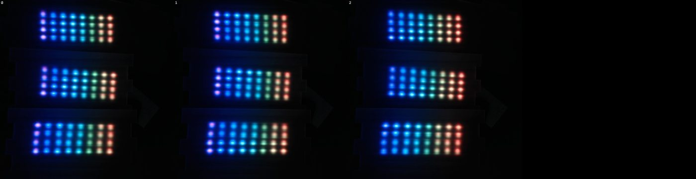
  <figcaption><b>Continuous rainbow.</b> One full cycle across the eight columns, scrolling between frames.</figcaption>
</figure>
<figure>
  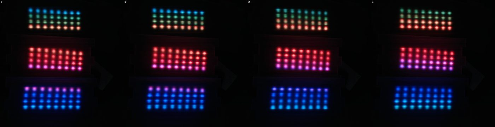
  <figcaption><b>The rainbow moving along rows,</b> across all three panels with no break at the panel boundaries.</figcaption>
</figure>
<figure>
  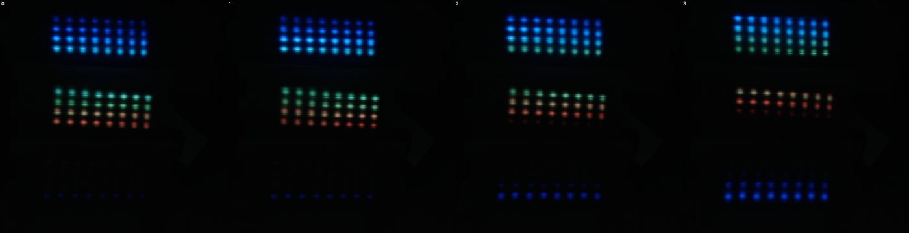
  <figcaption><b>Rainbow bump with gaps.</b> Each moving band fades through the spectrum. The red end is dim and only a row or two tall, because the bump fades through it.</figcaption>
</figure>

<h2>Blink, using the current register</h2>
<p>The last feature, from the final commit of the period, is <code>blink</code>. The colours are written once as static PWM, and then the firmware toggles the chip's Global Current Control register between your <code>gcc</code> value and 0 each half period. That is one register write per chip, about 0.8 ms for three panels, so even 100 Hz needs no frame rendering. <code>--duty</code> sets the percentage of each period the panel is on.</p>
<p>The speed setting uses the same direction as the waves (0 is fastest, 6 slowest):</p>
<div class="tablewrap"><table>
<thead><tr><th>--speed</th><th>0</th><th>1</th><th>2</th><th>3</th><th>4</th><th>5 (default)</th><th>6</th></tr></thead>
<tbody><tr><td>blink rate</td><td>100 Hz</td><td>75 Hz</td><td>25 Hz</td><td>10 Hz</td><td>2 Hz</td><td>1 Hz</td><td>0.5 Hz</td></tr></tbody>
</table></div>
<p>The toggle counter in <code>dump</code> was used to check the real rates, and they matched the table to within about 1% at the fast end. Above roughly 25 Hz persistence of vision makes the panel look like a steady, dimmer light, which is expected.</p>

<div class="pair">
  <figure>
    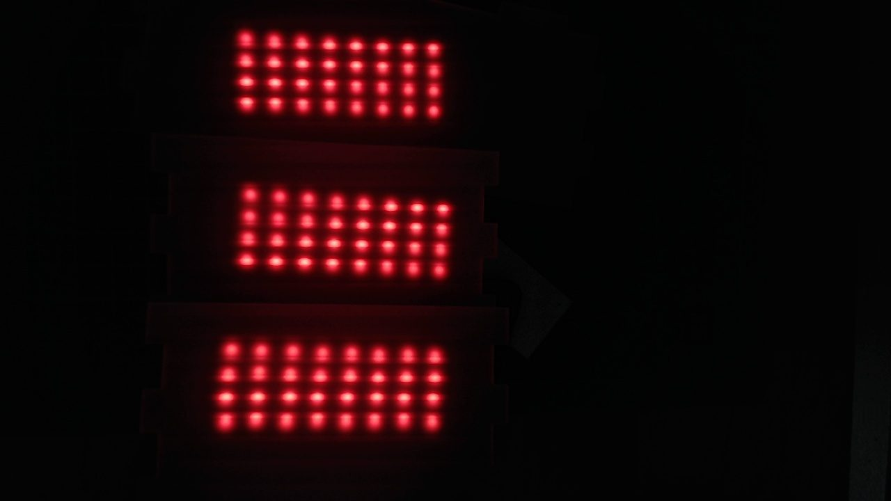
    <figcaption><b>A blink capture in red.</b></figcaption>
  </figure>
  <figure>
    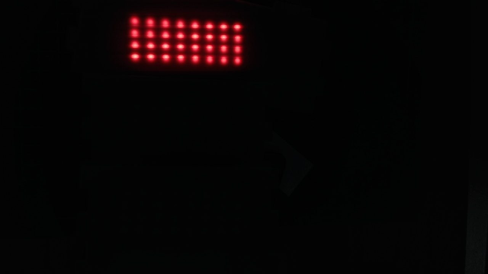
    <figcaption><b>A blink capture in cyan.</b> Frames catch the panels at different points in the cycle, so brightness differs.</figcaption>
  </figure>
</div>

<h2>Where it stands</h2>
<p>The REPL covers static patterns, three chip-driven ABM modes, firmware-rendered PWM waves and rainbows, and blink, with one <code>--speed</code> scale shared across them. Only one effect runs at a time, and any command that changes the LEDs stops the running effect. The README holds the full command list, the panel layout reference, and the measurements behind each design choice.</p>
<p>The next step is the DMX side: mapping a small set of channels (effect, colour, width, speed, direction) onto these commands for the two-panel final display.</p>

<p class="note">Written from the repository's commit history, README, and the webcam captures in <code>captures/</code>. Image captions describe what each frame shows; the captures were exposed for the camera, so colours and brightness differ from what the eye sees.</p>
</main>
